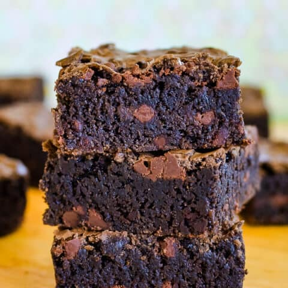

Chocolate Chip Brownies
Chocolate Chip Brownies

For the sweet tooth
Easy to make and never disappoints
Ingredients
- 1/2 cup butter
- 1/4 cup cocoa powder
- 2 eggs
- 1 cup sugar
- 1tsp vanilla extract
- 1/2tsp salt
- 3/4 cup all purpose flour
- 1/4tsp baking powder
- 1/2 cup mini chocloate chips
Instructions
- Preheat oven to 350 degrees F. Spray baking pan with non stick baking spray.
- Melt butter and whisk with cocoa powder. Set aside.
- Beat eggs until light in color. Add vanilla extract and sugar and beat again.
- Add chocloate butter mixture into eggs and beat again until mixed in.
- Sift flour, salt and baking powder. Slowly add to the egg mixture.
- Stir in mini chocolate chips
- Pour batter into pan and bake for 25-30 minutes. To check, insert a toothpick through the centre of brownie cake. If the toothpick comes out clean, it is ready.
- Let cool completely before cutting into pieces.